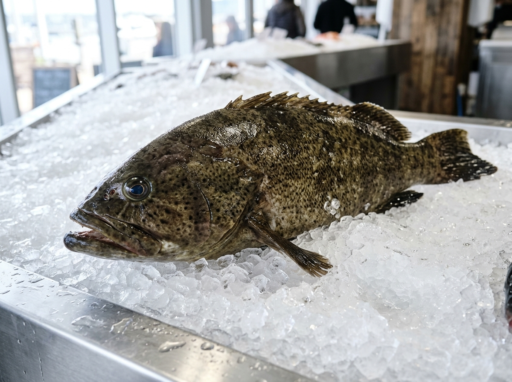

★ PLATO ESTRELLA
★ PLATO ESTRELLA
Cebiche Clásico Piurano
Cabrilla fresca de Don Pedro ChungaDados de Cabrilla Norteña de textura firme, marinados al instante con limón de Chulucanas, ají limo, cebolla criolla, zarandaja piurana y chifle crocante.
TRADICIÓN NORTEÑA
Sudado Especial a la Paitana
Con chicha de jora maceradaCabrilla entera cocida a fuego lento en reducción de chicha de jora norteña, cebollas gruesas, tomate, ají amarillo y culantro, acompañada de yucas harinosas.
 SIN ESPINAS
SIN ESPINAS
Chicharrón Crocante de Tollo
Tollo de leche de Caleta YacilaDados de Tollo de Leche sin espinas, marinados en ajo, mostaza y limón, empanizados y fritos con costra crocante y corazón tierno. Con yucas y salsa tártara de la casa.
 FAVORITO DE LA TARDE
FAVORITO DE LA TARDE
Chicharrón de Pota al Wok
Manto fresco de Caleta La IslillaAros de pota tierna de 18 mm, cortados al sesgo y fritos al fuego vivo. Cero amoniaco gracias a la cadena de frío a 0.9 °C. Con sarsa criolla y ají mochero.

👑 ALTA COCINA GOURMETSudado Imperial de Mero Murique
Espinel de fondo en Tierra ColoradaLa joya de la mesa norteña. Trozo selecto de Mero Murique de roca, bañado en salsa de mantequilla con hierbas aromáticas, vino blanco, chicha y yucas doradas.
 CALIENTITO AL SARTÉN
CALIENTITO AL SARTÉN
Arroz con Mariscos a la Norteña
Con conchas negras y langostinosArroz meloso cocinado con caldo concentrado de cangrejos y cabrilla, flambeado con pisco quebranta, queso parmesano y mixtura de mariscos frescos.
¿Sabes quién sacó el pescado que estás comiendo?
En Cebichería "El Cántaro", cada plato viene con una cartilla con código QR. Al escanearlo con la cámara de tu celular, puedes ver el video del patrón Don Pedro Chunga desembarcando en Paita, la hora exacta del pesaje y la temperatura a la que viajó en el furgón refrigerado.